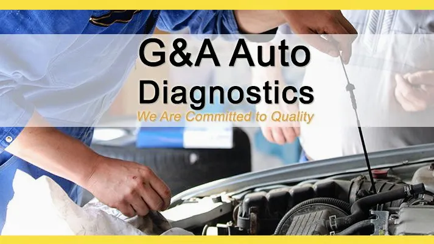
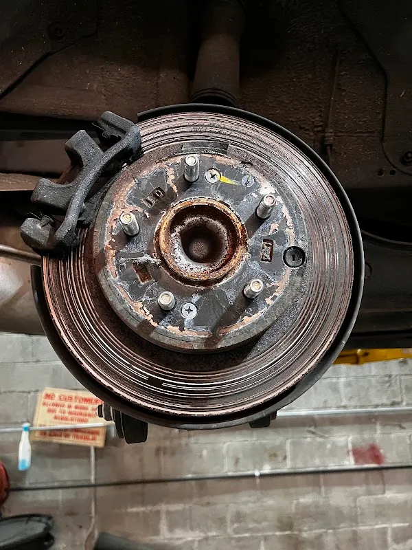

Photographs
G & A Auto Diagnostic & Wheel Alignments Center Inc. in Brooklyn.


Find the location
733 Livonia Ave Unit B, Brooklyn, NY 11207
Get directionsG & A Auto Diagnostic & Wheel Alignments Center Inc. in Brooklyn.


733 Livonia Ave Unit B, Brooklyn, NY 11207
Get directions